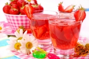

Для консервирования можно использовать разнообразные емкости. Однако вкусное варенье, джем или компот высокого качества можно получить лишь при условии выполнения всех правил приготовления. Для этого необходимо обзавестись соответствующим оборудованием, инвентарем, емкостями и измерительными приборами.
Прежде всего необходимо позаботиться о таре. Для домашнего консервирования наиболее пригодными являются стеклянные емкости. Они могут использоваться для любых продуктов, обладают достаточной прочностью, обеспечивают герметичность и подходят для многократного использования.
Диаметр горлышка у банок может быть разным, но лучше всего использовать банки с диаметром горловины 82 мм. Их вместимость может составлять 350, 500, 650, 800 мл, 1, 2, 3, 4, 5, 10 л.
Емкости обкатного типа следует укупоривать жестяными крышками с резиновыми кольцами, используя для этого ручные закаточные машинки различных модификаций.
Для приготовления варенья, компотов и джемов можно с успехом использовать банки с резьбовым типом укупорки «твист-офф». Такими банками удобно пользоваться для приготовления консервов, получаемых способом стерилизации, то есть нагреванием до температуры не выше 100 °C.
Винтовые крышки можно использовать только в тех случаях, когда не требуется герметичность. Они годятся для варенья и джемов с содержанием сахара более 50 %.
Для пастеризации лучше всего использовать крышки с зажимом, предназначенные для многократного использования.
Варенья и джемы, не требующие герметизации, стойкие при хранении, можно укупоривать различными полиэтиленовыми крышками.
Стеклянные бутыли следует укупоривать корковыми или полиэтиленовыми пробками, которые сверху заливаются сургучом или смолой.
Для откупоривания бутылей и банок следует иметь набор консервооткрывателей, штопоров и других приспособлений.
Для хранения фруктов, овощей и ягод перед их консервированием можно использовать деревянные ящики вместимостью 15–25 кг. Ягоды и фрукты долго сохраняют свою свежесть в ящиках-лотках.
Для мытья инвентаря и продуктов можно использовать обычные кухонные приспособления – душевые насадки, овощемойки, ерши, ведра, эмалированные тазы и кастрюли.
Для очистки и измельчения сырья необходимо применять ножи, секачи, терки, дробилки, измельчители и овощерезки разных видов. Сухие фрукты и ягоды, а также специи можно размалывать в ручных и электрических мельницах, кофемолках или ступках. В качестве приспособления для накалывания плодов можно использовать деревянные шпажки или зубочистки.
При взвешивании продуктов обязательным является использование весов, измерительных стаканов и кружек с нанесенными на них делениями. В случае крайней необходимости можно пользоваться обычными банками, стаканами или ложками с определенной вместимостью.
Для точного определения объема нужно пользоваться специальными мерными цилиндрами вместимостью 100–250 см3 или стеклянными пипетками.
Для измельчения фруктов, овощей и ягод или получения сока из них удобно использовать электровыжималку, более трудоемкими являются механические и ручные соковыжималки, а также сокоотделители – насадки к мясорубкам.
Для бланширования сырья хорошо подходят различного рода дуршлаги и различные металлические сетчатые корзины.
Пастеризовать сладкие консервы лучше всего в бачках или кастрюлях с широким дном. Чтобы стеклянные банки не трескались во время пастеризации, на дно кастрюли следует класть деревянную решетку. Горячие банки нужно вынимать с помощью специальных зажимов.
Для измерения температуры при пастеризации вместе с банками в бачок нужно помещать специально изготовленную пробную бутылку с термометром.
В домашнем хозяйстве желательно иметь набор песочных часов, с помощью которых можно легко проконтролировать продолжительность бланширования, пастеризации и других процессов консервирования.